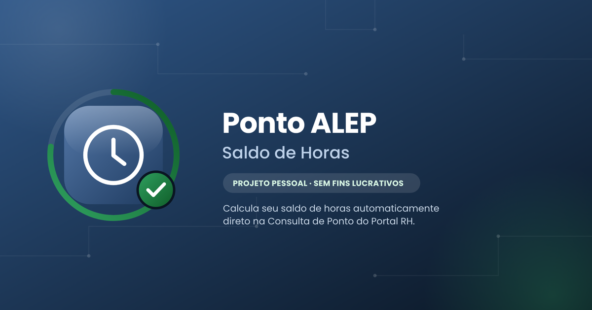

Esse é um projetinho de hobby — feito nas horas vagas por um colega da Casa que curte programação e engenharia de software. Não é nada oficial da ALEP, não substitui nenhum sistema e não tem a menor pretensão de tomar o lugar de nada que já existe por aqui.
A ideia é simples: pegar aquele saldo de horas que a gente sempre precisa calcular na mão e deixar automático — direto na tela de Consulta de Ponto, sem planilha e sem conta de cabeça.
É de graça, sem fins lucrativos, e qualquer sugestão é bem-vinda.
Funciona somente no Google Chorme aberto em seu PC
Instalar na Chrome Web Store →Extensão desenvolvida de forma independente, sem vínculo oficial com a ALEP.